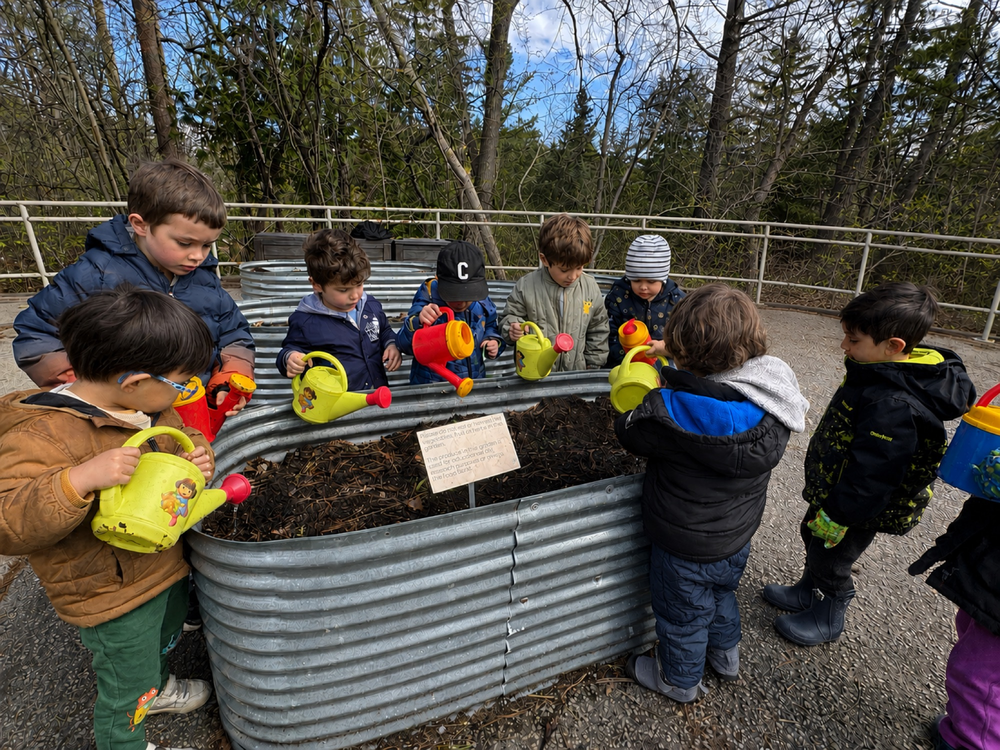
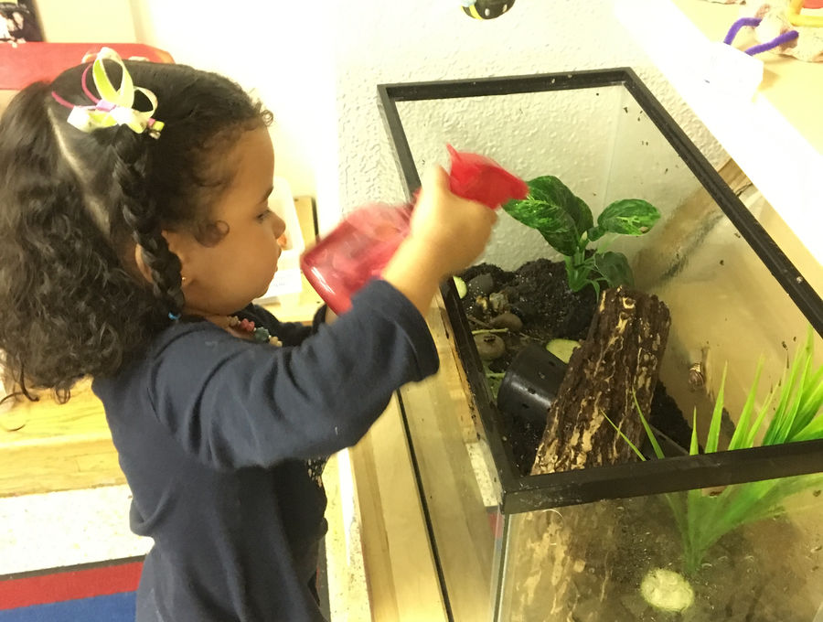
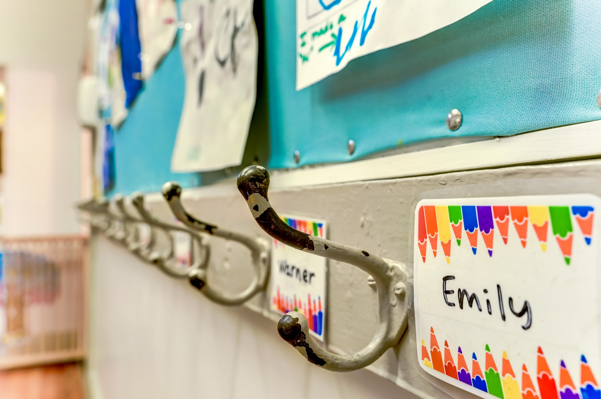
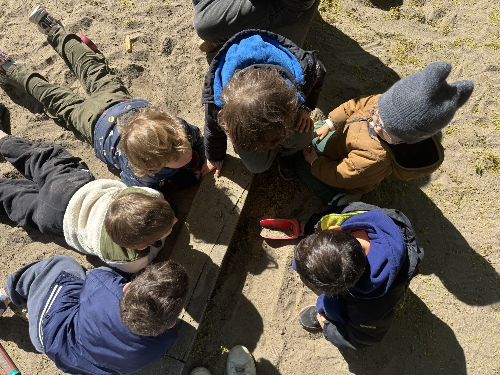
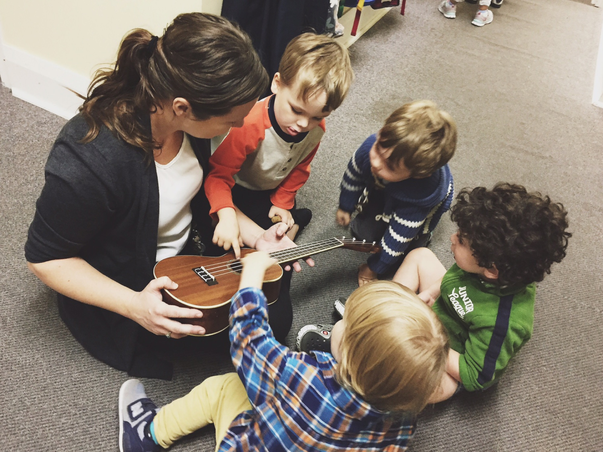
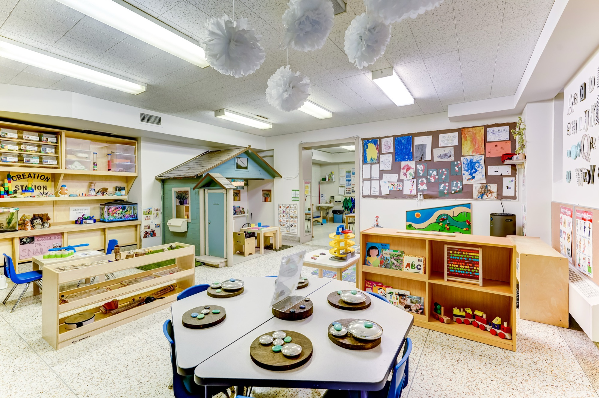
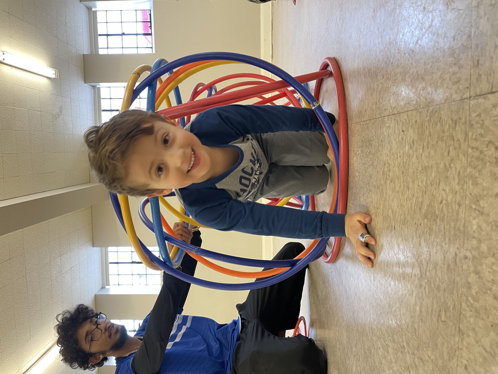
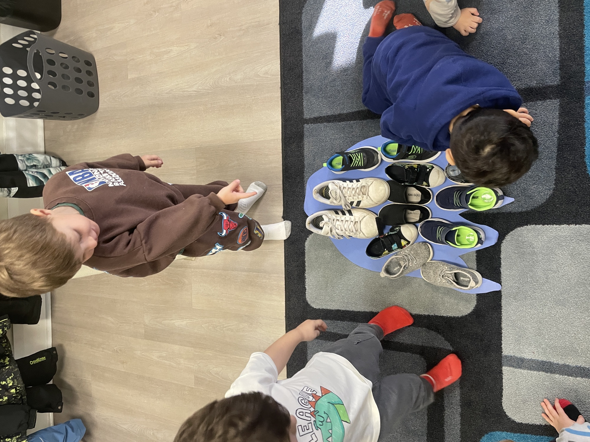
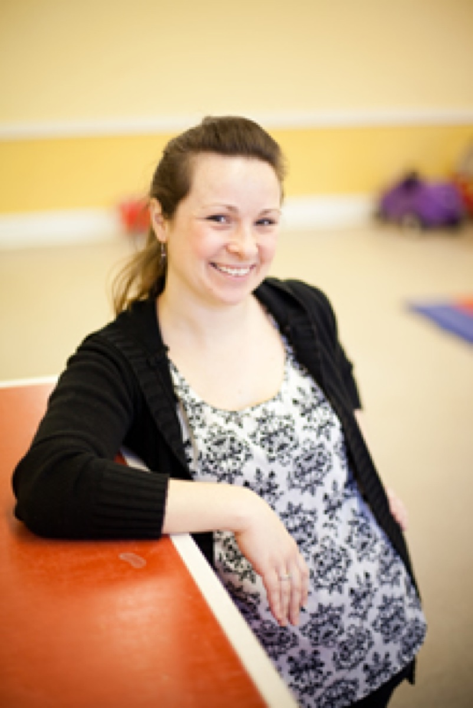

An engaged, busy room where three- to five-year-olds dig into letters, numbers and early writing — all through play they choose for themselves.
Senior Preschool is where children stretch into bigger thinking. The day leans into early literacy and numeracy — letter recognition, name and letter tracing, counting, sorting and patterning — alongside the friendships, problem-solving and self-regulation that make the move to “real school” feel easy. It’s all play-based and child-led, with the playground first thing each morning and daily creative, sensory and science activities. Children must turn 3 by December 31, and many arrive from our Junior class.

The Senior room heads outdoors first — fresh air and big-body play to start, then settling in for stories, snack and free play. And new this September: the day can continue through lunch and the afternoon, until 2:45.

Settling in & hellos

Playground first, 9–9:45

Stories, songs & letters

Healthy, made on-site

Choice across the room

Sportball & gross motor

Goodbye song at noon
Our educators plan fresh activities each week across every area of the room — here’s the kind of thing your child will dive into.
Magnetic letters, large-letter tracing, mailbox & card-making, puppet theatre, I-Spy books and story retelling.
Gear boards, lockboxes, colour-sorting with tongs, sequencing cards, magnetic mazes and numbered car ramps.
Playdough sculpting, seasonal painting & collage, rock painting, easel work, Q-tip and do-a-dot, alphabet stamping.
Water pitchers & pipettes, marble-run “pipes,” pond & farmhouse small-worlds, rice and bean bins, scooping & pouring.
Sportball, hockey sticks & scoops, kicking into nets, balance boards & rocks, bean-bag sorting and obstacle courses.
Planting and tending the garden, trikes & scooters, badminton, beanbag toss, treasure hunts and snow play.
Grocery store, ice-cream shoppe, doctor’s & dentist office, diner and play-house role-play with real props.
Drills, screws & drill boards, natural blocks, train tracks, Lincoln logs, plus hard hats, vests and pylons.
Life cycles of butterflies, birds & frogs, the class snailarium, light-table discovery and magnet investigation.
Letter recognition, sounds, and the first joy of writing their name.
Counting, sorting, patterning and 1:1 correspondence.
Focusing attention, managing feelings and persevering.
Cooperating, taking turns and seeing another’s point of view.
Self-help skills and the confidence to take on “real school.”
Two specialist classes run every single week: Sportball every Monday and French every Friday — plus a rotating mix of the activities below.
Senior Preschool runs 9:00–12:00, Monday–Friday, from the second week of September to mid-June. Choose the mornings that suit your family — tuition is billed monthly over the 10-month year.
| Mornings each week | Participating | Non-participating |
|---|---|---|
| 5 mornings | $795/mo | $1,016/mo |
| 4 mornings | $747/mo | $968/mo |
| 3 mornings | $628/mo | $853/mo |
| 2 mornings (Tue/Thu) | $502/mo | $727/mo |
| Extended day — 5 full days, 9:00–2:45 New | $1,380/mo | $1,601/mo |
Tell us a little about your child and we’ll send program details and answer your questions.
Throughout the year, the Senior room fills with guests, celebrations and a few adventures out into the city.
A morning together with the animals.
A spring field trip among the flowers.
Friendly animal visitors come to school.
Up-close discovery with unusual creatures.
An interactive music & rhythm experience.
A joyful family sing-along.
Gentle yoga and mindful movement.
Children share music from home.
PJ parties, Halloween, and a French Valentine’s morning.
A caregiver-appreciation tea and performance.
A community-hall celebration for all the family.
A proud send-off at the end of the year.

Heather has led the Senior room and overseen the whole school for well over a decade. She brings a theatre and music background into the classroom, building a program full of stories, songs and dramatic play that gets children ready — and excited — for kindergarten.
She holds an Early Childhood Education credential from Toronto Metropolitan University (Ryerson) and is a Registered Early Childhood Educator (RECE), accredited by the College of Early Childhood Educators.
“By June our son was reading his own name, counting everything in sight, and couldn’t wait for kindergarten. The Senior room gave him exactly the confidence he needed.”
Yes. The Senior year leans into early literacy and numeracy — letters and sounds, name and letter tracing, counting, sorting and patterning — plus the focus, independence and social skills kindergarten asks for. It all stays play-based and child-led, guided by ELECT.
Senior Preschool is for children aged 3–5 who turn 3 by December 31. Many children move up from our Junior class, and new families are welcome too, space permitting.
No. Toilet training isn’t required for any class. We work alongside you to encourage toileting readiness as a positive, pressure-free experience.
A co-operative is a non-profit run with its families. Parents take part in classroom life and in how the school is run, which keeps classes small, fees lower, and the community close. We’ll explain the options on your tour.
We keep a ratio of one adult to every five children across all classes, with at least one Registered Early Childhood Educator (RECE) leading the room.
Not at this time. Our board found that staying outside CWELCC protects our program quality, staffing flexibility and financial stability as a small co-op.
Enrolments are open for the 2026/2027 school year. Come visit and meet Heather.